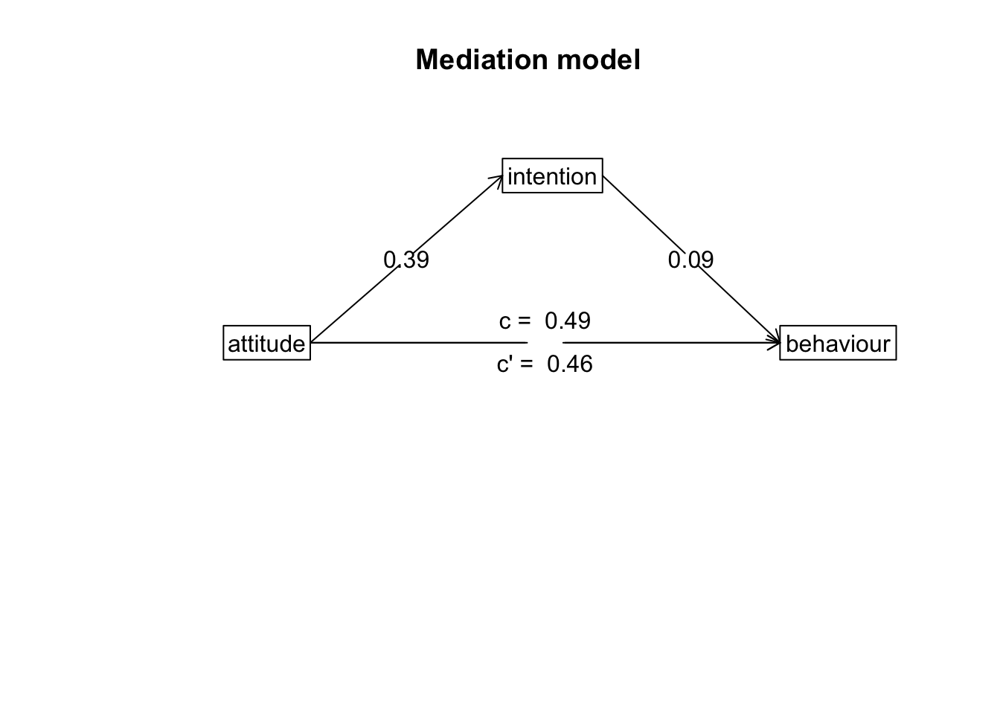

Content
We will be using the following packages in this week’s workbook:
library(psych)
library(lm.beta)
library(lavaan)
library(tidyverse)
library(semPlot)Mediation
As covered in the Lecture series, mediation describes a relationship where the influence of one variable on another can be explained through a third variable. In the example below, we will test whether the relationship between attitudes towards exercise and exercise behaviour can be explained through intentions to exercise (i.e., individuals who have positive attitudes about exercise increase their intention to exercise, which in turn increases exercise behaviour). For more information on these scales (and some of the ones we will use later), see this paper: https://search.proquest.com/docview/202682863. Note, we only use the first 5-items on each scale to keep things simple.
1. Clean data for analysis.
First, we must calculate the variables that we need for our analysis. This process should be fairly familiar by now.
data.clean <- data %>%
mutate(attitude = exercise.attitude.1 + exercise.attitude.2 + exercise.attitude.3 + exercise.attitude.4 + exercise.attitude.5,
intention = exercise.intention.1 + exercise.intention.2 + exercise.intention.3 + exercise.intention.4 + exercise.intention.5,
behaviour = exercise.behaviour.1 + exercise.behaviour.2 + exercise.behaviour.3 + exercise.behaviour.4 + exercise.behaviour.5) %>%
dplyr::select(student.no,attitude,intention,behaviour) %>%
filter(!is.na(attitude)) %>%
filter(!is.na(intention)) %>%
filter(!is.na(behaviour))2. Run statistical test
Remember, mediation is when the effect of one IV could be explained through a third variable (mediation). If there is an effect in a model without the mediator, but that effect is reduced (or disappears) when the mediator is included, there is a chance the mediation is happening. In order to check whether our variables meet these conditions, we need to conduct a number of linear regressions.
Model 1
Here, we test whether there is an association between the predictor (attitudes) and the outcome variable (behaviour):
lm(behaviour ~ attitude,data = data.clean) %>%
lm.beta() %>%
summary()##
## Call:
## lm(formula = behaviour ~ attitude, data = data.clean)
##
## Residuals:
## Min 1Q Median 3Q Max
## -9.4673 -3.4492 -0.5395 3.5689 11.6531
##
## Coefficients:
## Estimate Standardized Std. Error t value Pr(>|t|)
## (Intercept) 15.44318 0.00000 0.60256 25.629 <2e-16 ***
## attitude 0.02407 0.02776 0.11384 0.211 0.833
## ---
## Signif. codes: 0 '***' 0.001 '**' 0.01 '*' 0.05 '.' 0.1 ' ' 1
##
## Residual standard error: 4.661 on 58 degrees of freedom
## Multiple R-squared: 0.0007704, Adjusted R-squared: -0.01646
## F-statistic: 0.04472 on 1 and 58 DF, p-value: 0.8333Model 2
Here, we test whether including the mediator (intention) in the model changes the relationship between the predictor (attitude) and the outcome variable (behaviour):
lm(behaviour ~ attitude + intention,data = data.clean) %>%
lm.beta() %>%
summary()##
## Call:
## lm(formula = behaviour ~ attitude + intention, data = data.clean)
##
## Residuals:
## Min 1Q Median 3Q Max
## -9.2548 -3.0644 -0.7116 3.8375 11.0788
##
## Coefficients:
## Estimate Standardized Std. Error t value Pr(>|t|)
## (Intercept) 15.38806 0.00000 0.60566 25.407 <2e-16 ***
## attitude 0.01627 0.01876 0.11420 0.142 0.887
## intention 0.14956 0.12665 0.15549 0.962 0.340
## ---
## Signif. codes: 0 '***' 0.001 '**' 0.01 '*' 0.05 '.' 0.1 ' ' 1
##
## Residual standard error: 4.664 on 57 degrees of freedom
## Multiple R-squared: 0.01673, Adjusted R-squared: -0.01777
## F-statistic: 0.4849 on 2 and 57 DF, p-value: 0.6183Model 3
Also, in order for there to be a mediation, we must observe a relationship between the predictor (attitude) and the mediator (intention):
lm(intention ~ attitude,data = data.clean) %>%
lm.beta() %>%
summary()##
## Call:
## lm(formula = intention ~ attitude, data = data.clean)
##
## Residuals:
## Min 1Q Median 3Q Max
## -8.421 -2.590 -0.212 2.788 6.631
##
## Coefficients:
## Estimate Standardized Std. Error t value Pr(>|t|)
## (Intercept) 0.36855 0.00000 0.50917 0.724 0.472
## attitude 0.05219 0.07106 0.09620 0.543 0.590
##
## Residual standard error: 3.938 on 58 degrees of freedom
## Multiple R-squared: 0.00505, Adjusted R-squared: -0.0121
## F-statistic: 0.2944 on 1 and 58 DF, p-value: 0.5895Mediation Analysis
While we may or may not meet the conditions for a mediation above, we will continue with the analysis to demonstrate the process of conducting a mediation analysis regardless.
In order to conduct a mediation analysis in R, we will load the psych package. If you haven’t installed the psych package yet, make sure to do this before loading the psych package.
library(psych)The function that runs the mediation analysis is aptly named mediate(). Like all analysis functions, the mediate() function accepts a formula and a data.frame, but also a couple of options that we will want to change. For the formula, the mediate function takes a specific form, where the mediator is put inside brackets on the right-hand side of the ~ symbol:
DV ~ IV + (Mediator)So for our analysis, the code becomes the following. Note, we also want to set the ‘std’ argument to TRUE to ensure we receive standardised estimates, and the ‘plot’ argument to FALSE so we are only seeing the numeric output (we will see the plot later).
model <- mediate(behaviour ~ attitude + (intention),data = data.clean,std = TRUE,plot = FALSE)
model##
## Mediation/Moderation Analysis
## Call: mediate(y = behaviour ~ attitude + (intention), data = data.clean,
## std = TRUE, plot = FALSE)
##
## The DV (Y) was behaviour . The IV (X) was attitude . The mediating variable(s) = intention .
##
## Total effect(c) of attitude on behaviour = 0.03 S.E. = 0.13 t = 0.21 df= 58 with p = 0.83
## Direct effect (c') of attitude on behaviour removing intention = 0.02 S.E. = 0.13 t = 0.14 df= 57 with p = 0.89
## Indirect effect (ab) of attitude on behaviour through intention = 0.01
## Mean bootstrapped indirect effect = 0 with standard error = 0.03 Lower CI = -0.05 Upper CI = 0.06
## R = 0.13 R2 = 0.02 F = 0.48 on 2 and 57 DF p-value: 0.618
##
## To see the longer output, specify short = FALSE in the print statement or ask for the summaryMost of the information above is what we have encountered previously. The main information we are interested in this output is the line on the mean bootstrapped indirect effect. A large indirect effect (and consequently a greater drop between the total effect and the direct effect) would indicate that mediation is occuring. Since we are bootstrapping, we can tell the significance through confidence intervals. If the range between the lower CI and the upper CI contains zero, then the indirect effect is not significant. If this range does not contain zero, then we have a significant mediation effect.
3. Plot data
Path Diagram
For mediation, there’s no good way to plot the raw data that visualises the mediation. The most common way to visualise a mediated effect is through a path diagram. You can do this directly in the mediate() function by setting the ‘plot’ argument to TRUE or use the mediate.diagram() like below:
mediate.diagram(model)
4. Write-up analysis.
There are several things you need to include when writing up a mediation analysis. Writing up a mediation analysis includes the write-up for each individual models with and without the mediator (Model 1 and Model 2 above - these numbers are also included in the output for the mediate() function), and also the estimated indirect effect and associated confidence intervals. Usually, you would want to accompany the write-up with a path diagram such as the one above. It does not make much sense to write-up the analysis above as we failed to meet the criteria for a mediation in the first instance, but if we were to do it anyway, it may go something like this:
In the model where attitudes towards exercise predicted variance in exercise behaviour, the effect of exercise attitudes was not significant (beta = 0.03, p = 0.833). When including intention to exercise into the model, the effect of attitudes on behaviour did not change (beta = 0.02, p = 0.887). Mediation analysis revealled a non-significant indirect effect of intentions to exercise on the association between attitudes towards exercise and exercise behaviour (mean bootstrapped indirect effect = 0.02, 95% CI = -0.05, 0.06).
Note: While we report the results in text above, it is sometimes also easier to report the separate models in a table.
Before We Continue…
We are about to start using the lavaan package, which is used for path analyses and structural equation models. This workbook is only meant to serve as an introduction to the lavaan package, and therefore we will only discuss some of the basic functions. You are able to add a lot of complexity to structural equation models that we will not be touching. If you truly wish to master this package, you will need to go beyond the content covered here.
Mediation Analysis Through Structural Equation Modelling (SEM)
Mediation is an example of a simple SEM. We will first re-run the mediation we conducted above in the lavaan package, as this is a handy way of demonstrating the logic of the lavaan package.
As with all analyses, we will be following the basic procedure of:
- Clean the data for analysis.
- Run the statistical test.
- Plot the data.
- Write-up analysis.
1. Clean the data for analysis.
As always, our first step is to calculate the variables from the individual items.
The code below is identical to the code used for the mediation above.
data2.clean <- data %>%
mutate(attitude = exercise.attitude.1 + exercise.attitude.2 + exercise.attitude.3 + exercise.attitude.4 + exercise.attitude.5,
intention = exercise.intention.1 + exercise.intention.2 + exercise.intention.3 + exercise.intention.4 + exercise.intention.5,
behaviour = exercise.behaviour.1 + exercise.behaviour.2 + exercise.behaviour.3 + exercise.behaviour.4 + exercise.behaviour.5) %>%
dplyr::select(student.no,attitude,intention,behaviour) %>%
filter(!is.na(attitude)) %>%
filter(!is.na(intention)) %>%
filter(!is.na(behaviour))2. Run statistical test.
Previously, when specifying a regression in R, we have used the following form:
y ~ x1 + x2 + x3 + …
An SEM formula is an extention of of this, where multiple regression equations (or similar relationships) are estimated at once. Like with a regression, we use the ~ to specify a relationship between an outcome (on the left), and predictors (on the right).
In the table below are some other relationships that you may use when constructing a SEM.
| operator | relationship type | example | explanation |
|---|---|---|---|
=~ |
Latent Variable | y =~ x1 + x2 + x3… | y is measured by x1, x2, x3, etc. |
~~ |
Covariance | x1 ~~ x2 | x1 is correlated with x2 |
:= |
Define Parameter | effect := a*b | Estimate ‘effect’ which is made up of ‘a’ times ‘b’ |
Note: you can also label parameters by using the * symbol before variables. If you give two variables the same label, it will force the estimates to be the same (this comes in handy sometimes, but not something we will use in this workbook).
Below is the formula to conduct a mediation analysis identical to the one we conducted in Workbook 7. See if you can understand each line and what relationship it is specifying before reading the breakdown. Remember, each line of code can be read as relationships between variables in the model.
sem.formula <- '
behaviour ~ c*attitude
behaviour ~ b*intention
intention ~ a*attitude
indirect := a*b
direct := c
total := direct + indirect
'Let’s break this down:
| line | explanation |
|---|---|
| behaviour ~ c*attitude | Behaviour is predicted from attitude, and this relationship is labelled ‘c’ |
| behaviour ~ b*intention | Behaviour is predicted from intention, and this relationship is labelled ‘b’ |
| intention ~ a*attitude | Intention is predicted from attitude, and this relationship is labelled ‘a’ |
| indirect := a*b | Define a parameter called ‘indirect’ which is made up of ‘a’ times ‘b’ |
| direct := c | Define a parameter called ‘direct’ which is made up of ‘c’ |
| total := direct + indirect | Define the total effect (the combination of direct and indirect effect). |
Essentially, the first three lines of the code are identical to running the Model 1, Model 2, and Model 3 that we ran above, while the last three lines are like running the mediate() function get estimate the indirect and direct effect.
To run the SEM, we use the sem() function. Like all analyses done previously, we need to specify two things: the formula (which we saved as the object sem.formula) and the data.frame. We also set values for a few other arguments. We set ‘standardized’ to TRUE so that we get standardised estimates, ‘fit.measures’ to TRUE so we get model fit indicators, and ‘rsquare’ to TRUE to get an r-square statistic for the model.
med.sem.model <- sem(sem.formula,data2.clean)
summary(med.sem.model,standardized = TRUE, fit.measures = TRUE, rsquare = TRUE)## lavaan 0.6-4 ended normally after 15 iterations
##
## Optimization method NLMINB
## Number of free parameters 5
##
## Number of observations 60
##
## Estimator ML
## Model Fit Test Statistic 0.000
## Degrees of freedom 0
##
## Model test baseline model:
##
## Minimum Function Test Statistic 1.316
## Degrees of freedom 3
## P-value 0.725
##
## User model versus baseline model:
##
## Comparative Fit Index (CFI) 1.000
## Tucker-Lewis Index (TLI) 1.000
##
## Loglikelihood and Information Criteria:
##
## Loglikelihood user model (H0) -342.351
## Loglikelihood unrestricted model (H1) -342.351
##
## Number of free parameters 5
## Akaike (AIC) 694.702
## Bayesian (BIC) 705.174
## Sample-size adjusted Bayesian (BIC) 689.448
##
## Root Mean Square Error of Approximation:
##
## RMSEA 0.000
## 90 Percent Confidence Interval 0.000 0.000
## P-value RMSEA <= 0.05 NA
##
## Standardized Root Mean Square Residual:
##
## SRMR 0.000
##
## Parameter Estimates:
##
## Information Expected
## Information saturated (h1) model Structured
## Standard Errors Standard
##
## Regressions:
## Estimate Std.Err z-value P(>|z|) Std.lv Std.all
## behaviour ~
## attitude (c) 0.016 0.111 0.146 0.884 0.016 0.019
## intention (b) 0.150 0.152 0.987 0.324 0.150 0.127
## intention ~
## attitude (a) 0.052 0.095 0.552 0.581 0.052 0.071
##
## Variances:
## Estimate Std.Err z-value P(>|z|) Std.lv Std.all
## .behaviour 20.663 3.772 5.477 0.000 20.663 0.983
## .intention 14.994 2.737 5.477 0.000 14.994 0.995
##
## R-Square:
## Estimate
## behaviour 0.017
## intention 0.005
##
## Defined Parameters:
## Estimate Std.Err z-value P(>|z|) Std.lv Std.all
## indirect 0.008 0.016 0.482 0.630 0.008 0.009
## direct 0.016 0.111 0.146 0.884 0.016 0.019
## total 0.024 0.112 0.215 0.830 0.024 0.028If we compare the results here to mediation, we should see that we get very similar, if not the same, results.
3. Plot the model.
The easiest way to plot a structural equation model is using a path diagram. Unfortunately, this is not easy to do in ggplot2. However, we can use a the semPaths() function from the semPlot package. This function has the advantage of being easy to use - all you need to do is load your model estimated in laavan and specify which paths you want to see (or hide). The disadvantage is that you cannot choose how you layout your path diagram, or customise the look of your diagram. Therefore, in order to create publication worthy graphics, you must use another program.
semPaths(med.sem.model,whatLabel = "est",intercept = FALSE,residuals = FALSE)More complicated Path Analysis
We will now have a go at conducting a more complicated SEM. We will continue investigating the relationship between attitudes to exercise, intentions to exercise, and exercise behaviour, but also now investigate norms surrounding fitness and perceived behavioural control. The model we will fit is based on the Theory of Planned Behaviour, and is depicted below.
Theory of Planned Behaviour
In words, we predict that attitudes towards exercise, norms about exercise, and perceived behavioural control regarding exercise will predict intention to exercise. In turn, intention to exercise predict exercise behaviour. We also predict that perceived behavioural control regarding exercise will directly predict exercise behaviour.
1. Clean the data for analysis.
First, we must calculate the variables from each of the items. Something we have done many times now.
data2.clean <- data %>%
mutate(attitude = exercise.attitude.1 + exercise.attitude.2 + exercise.attitude.3 + exercise.attitude.4 + exercise.attitude.5,
intention = exercise.intention.1 + exercise.intention.2 + exercise.intention.3 + exercise.intention.4 + exercise.intention.5,
control = exercise.control.1 + exercise.control.2 + exercise.control.3,
norms = exercise.norms.1 + exercise.norms.2 + exercise.norms.3 + exercise.norms.4 + exercise.norms.5,
behaviour = exercise.behaviour.1 + exercise.behaviour.2 + exercise.behaviour.3 + exercise.behaviour.4 + exercise.behaviour.5) %>%
dplyr::select(student.no,attitude,intention,control,norms,behaviour) %>%
filter(!is.na(attitude)) %>%
filter(!is.na(intention)) %>%
filter(!is.na(control)) %>%
filter(!is.na(norms)) %>%
filter(!is.na(behaviour))2. Run statistical test.
First, we need to specify the model. Below, this model is specified as formula that lavaan can read:
model <- '
intention ~ attitude + norms + control
norms ~~ attitude
attitude ~~ control
control ~~ norms
behaviour ~ intention + control + attitude
'To break down the code above: Line 1: Attitudes, norms, and control predict intention. Lines 2 to 4: Covariance between predictors is specified explicitly. Line 5: Intention, control and attitudes predicts behaviour.
We then run the SEM model using the sem() function:
sem.model <- sem(model,data = data2.clean)
summary(sem.model,standardized = TRUE,fit = TRUE, rsquare = TRUE)## lavaan 0.6-4 ended normally after 47 iterations
##
## Optimization method NLMINB
## Number of free parameters 14
##
## Number of observations 60
##
## Estimator ML
## Model Fit Test Statistic 0.366
## Degrees of freedom 1
## P-value (Chi-square) 0.545
##
## Model test baseline model:
##
## Minimum Function Test Statistic 4.176
## Degrees of freedom 10
## P-value 0.939
##
## User model versus baseline model:
##
## Comparative Fit Index (CFI) 1.000
## Tucker-Lewis Index (TLI) -0.088
##
## Loglikelihood and Information Criteria:
##
## Loglikelihood user model (H0) -857.231
## Loglikelihood unrestricted model (H1) -857.048
##
## Number of free parameters 14
## Akaike (AIC) 1742.463
## Bayesian (BIC) 1771.784
## Sample-size adjusted Bayesian (BIC) 1727.750
##
## Root Mean Square Error of Approximation:
##
## RMSEA 0.000
## 90 Percent Confidence Interval 0.000 0.288
## P-value RMSEA <= 0.05 0.574
##
## Standardized Root Mean Square Residual:
##
## SRMR 0.020
##
## Parameter Estimates:
##
## Information Expected
## Information saturated (h1) model Structured
## Standard Errors Standard
##
## Regressions:
## Estimate Std.Err z-value P(>|z|) Std.lv Std.all
## intention ~
## attitude 0.051 0.094 0.541 0.589 0.051 0.069
## norms -0.106 0.129 -0.819 0.413 -0.106 -0.106
## control 0.035 0.134 0.258 0.796 0.035 0.033
## behaviour ~
## intention 0.148 0.152 0.979 0.328 0.148 0.126
## control 0.022 0.157 0.138 0.890 0.022 0.018
## attitude 0.017 0.111 0.151 0.880 0.017 0.019
##
## Covariances:
## Estimate Std.Err z-value P(>|z|) Std.lv Std.all
## attitude ~~
## norms -0.561 2.654 -0.211 0.833 -0.561 -0.027
## control -0.618 2.561 -0.241 0.809 -0.618 -0.031
## norms ~~
## control -2.317 1.907 -1.215 0.224 -2.317 -0.159
##
## Variances:
## Estimate Std.Err z-value P(>|z|) Std.lv Std.all
## .intention 14.790 2.700 5.477 0.000 14.790 0.981
## .behaviour 20.656 3.771 5.477 0.000 20.656 0.983
## attitude 27.936 5.100 5.477 0.000 27.936 1.000
## norms 15.122 2.761 5.477 0.000 15.122 1.000
## control 14.077 2.570 5.477 0.000 14.077 1.000
##
## R-Square:
## Estimate
## intention 0.019
## behaviour 0.017Notice above in the summary() function, we have included additional arguments to get extra statistics that are helpful when it comes to report the analysis.
3. Plot the model.
Again, we use semPaths() to plot our SEM model. Here, the limitations of not being able to organise the layout of your plot is apparent, though it still may be helpful to visualise your results to help your understanding.
semPaths(sem.model,whatLabel = "std",intercept = FALSE,residuals = FALSE)Model Comparisons
Model comparisons can be used to help decide which model best explains your data with the fewest number of parameters. As covered in the lecture series, models can only be compared if they are nested (i.e., one model must be contained within the other model). For SEM, using model comparisons is particularly useful to determine the significance of individuals paths.
In the example below, we will compare the model above with a simpler model, where the path between control and behaviour is removed. The formula and code to conducted this slightly simpler model is as follows:
model2 <- '
intention ~ attitude + norms + control
norms ~~ attitude
attitude ~~ control
control ~~ norms
behaviour ~ intention
'
sem.model2 <- sem(model2,data = data2.clean)
#summary(sem.model2,standardized = TRUE,fit = TRUE, rsquare = TRUE)Note: we have not run the summary() function above to save on space, but feel free to have a look at it.
Now that we have our two models that we will compare, the function we use is called anova(), not to be confused with aov() that runs a one-way between-subjects ANOVA.
For the anova() function, we simply have to specify the two models we are comparing as the two arguments. This will conduct a chi-square difference test.
anova(sem.model,sem.model2)## Chi Square Difference Test
##
## Df AIC BIC Chisq Chisq diff Df diff Pr(>Chisq)
## sem.model 1 1742.5 1771.8 0.3663
## sem.model2 3 1738.5 1763.6 0.4067 0.040419 2 0.98mod.com <- anova(sem.model,sem.model2)
mcp <- mod.com$`Pr(>Chisq)`[2]Above, we find that there is not a significant difference between the two models. Therefore, it does not seem that dropping the path between ‘control’ and ‘behaviour’ significantly reduces model fit. As such, you could be justified in removing this path from the model.
While above, we use the anova() function to test the difference between nested SEM models, we can also use this function to compare models from other functions, such as lm().
Introducing Latent Variables
Up to now, to calculate variables from individual items, we have been adding each item up. However, we could also compute latent variables, which are the underlying variables that each item is meant to tap into.
For example, we could calculate the latent variable ‘norms’ from each of the individual items.
attitude.formula <- '
attitude =~ exercise.attitude.1 + exercise.attitude.2 + exercise.attitude.3 + exercise.attitude.4 + exercise.attitude.5
'
attitude.model <- sem(attitude.formula,data = data)
summary(attitude.model,standardized = TRUE)## lavaan 0.6-4 ended normally after 67 iterations
##
## Optimization method NLMINB
## Number of free parameters 10
##
## Number of observations 60
##
## Estimator ML
## Model Fit Test Statistic 1.278
## Degrees of freedom 5
## P-value (Chi-square) 0.937
##
## Parameter Estimates:
##
## Information Expected
## Information saturated (h1) model Structured
## Standard Errors Standard
##
## Latent Variables:
## Estimate Std.Err z-value P(>|z|) Std.lv Std.all
## attitude =~
## exercis.tttd.1 1.000 0.276 0.125
## exercis.tttd.2 3.859 7.310 0.528 0.598 1.065 0.461
## exercis.tttd.3 2.523 4.726 0.534 0.593 0.696 0.341
## exercis.tttd.4 2.657 4.961 0.536 0.592 0.734 0.368
## exercis.tttd.5 0.108 1.504 0.072 0.943 0.030 0.015
##
## Variances:
## Estimate Std.Err z-value P(>|z|) Std.lv Std.all
## .exercis.tttd.1 4.785 0.899 5.324 0.000 4.785 0.984
## .exercis.tttd.2 4.197 1.584 2.649 0.008 4.197 0.787
## .exercis.tttd.3 3.696 0.907 4.074 0.000 3.696 0.884
## .exercis.tttd.4 3.445 0.917 3.758 0.000 3.445 0.865
## .exercis.tttd.5 3.713 0.678 5.475 0.000 3.713 1.000
## attitude 0.076 0.263 0.290 0.772 1.000 1.000semPaths(attitude.model,whatLabel = "std",intercept = FALSE,residuals = FALSE)How about we compute latent variables for all the variables in the TPB model above? Doing something like this may not make a lot of sense: we will end up with a gangly model, and we may not have enough observations to get sensible results, but we can do it do it anyway! For demonstrative purposes… The code is provided below to run this analysis, but this code is not executed, as the output is quite long an unweildy.
Specify the Model
model <- '
attitude =~ exercise.attitude.1 + exercise.attitude.2 + exercise.attitude.3 + exercise.attitude.4 + exercise.attitude.5
intention =~ exercise.intention.1 + exercise.intention.2 + exercise.intention.3 + exercise.intention.4 + exercise.intention.5
control =~ exercise.control.1 + exercise.control.2 + exercise.control.3
norms =~ exercise.norms.1 + exercise.norms.2 + exercise.norms.3 + exercise.norms.4 + exercise.norms.5
behaviour =~ exercise.behaviour.1 + exercise.behaviour.2 + exercise.behaviour.3 + exercise.behaviour.4 + exercise.behaviour.5
intention ~ attitude + norms + control
behaviour ~ intention + control
'We won’t run the summary() just now because it is very unwieldy, but we have covered the interpretation of the output above.
sem.model <- sem(model,data = data)
summary(sem.model,standardized = TRUE,fit = TRUE, rsquare = TRUE)